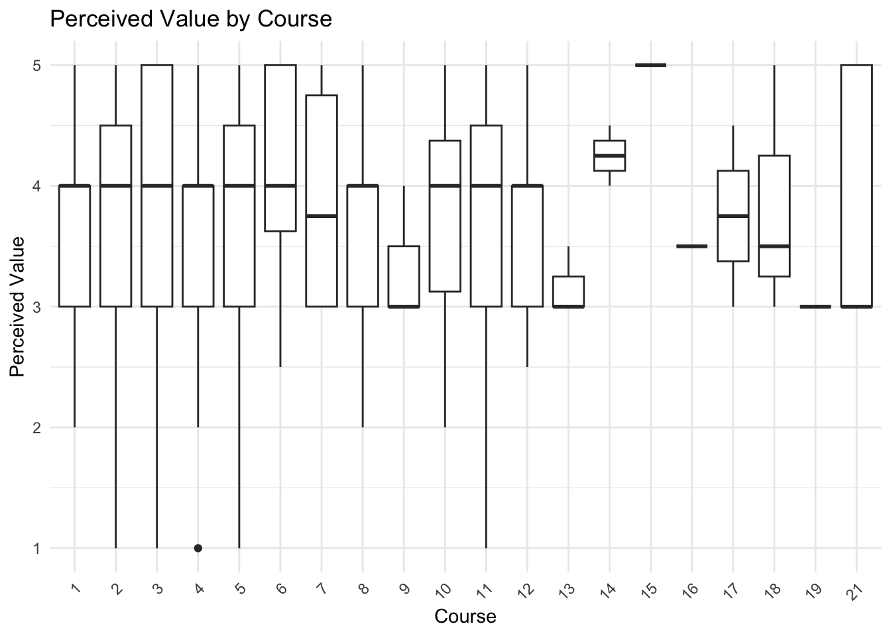
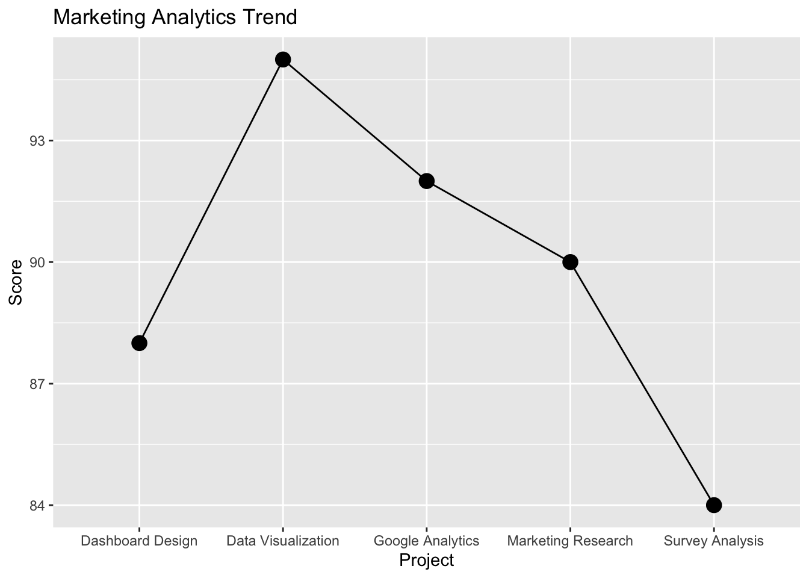

# A tibble: 6 × 2
course perceived_value
<fct> <dbl>
1 3 5
2 5 4
3 5 3.5
4 5 2
5 1 4
6 1 4 Marketing Projects
Marketing Analytics Projects
This page showcases selected IBM coursework projects focused on marketing analytics, data visualization, dashboards, and business insights.
These projects demonstrate my experience using RStudio and Quarto to organize data, create visualizations, and communicate findings clearly.
Project 1: Research Participation Analysis
For this project, I analyzed student survey data to understand how students viewed the value of research participation. My research question focused on whether students in different courses perceived value differently.
Tools Used
- RStudio
- Quarto
- tidyverse
- ggplot2
- Data wrangling
- Data visualization
What I Did
- Cleaned and organized the data
- Created a perceived value variable
- Compared student responses across courses
- Used charts to make the results easier to understand
Skills Shown
This project shows my ability to work with data, create useful visuals, and explain results in a clear way.
Example Visualization
Data Wrangling
Data Visualization - Boxplot

The boxplot shows how perceived value is distributed across different courses.
Project 2: Data Visualization Practice
This project focused on transforming raw datasets into visuals that are easier to understand and explain.
What I Learned
- How to create charts in R
- How to summarize patterns
- How visualization improves communication
Visualization Example

Project 3: Marketing Analytics Reflection
Through these projects, I learned how analytics can support marketing decisions by helping businesses better understand customer behavior, performance, and trends.
I also improved my ability to explain technical information in a simpler and more professional way.
Project 4: Advanced Data Types and Structures
This project focused on working with advanced data types in R, including strings, factors, and date-time objects. The assignment also explored how Revealjs presentations can be used to communicate technical information more effectively.
Skills Used
- tidyverse
- stringr
- forcats
- lubridate
- Revealjs
- Data transformation
- Data summarization
What I Learned
This project helped me better understand how different data types are handled in R. I learned how string functions can identify text patterns, how factor functions help organize categorical data, and how date-time functions simplify working with dates.
I also learned how Revealjs presentations can combine code, analysis, and presentation design into one workflow.
Example Functions
String Function
[1] 3Factor Function
[1] A B C
Levels: C B ADate-Time Function
[1] "2026-05-12"Skills Shown
- Data transformation
- Technical communication
- Analytical thinking
- Problem solving
- Workflow organization
Reflection
This project improved my confidence working with more advanced data structures and functions in R. It also strengthened my understanding of how technical concepts can be communicated through presentations and reports.